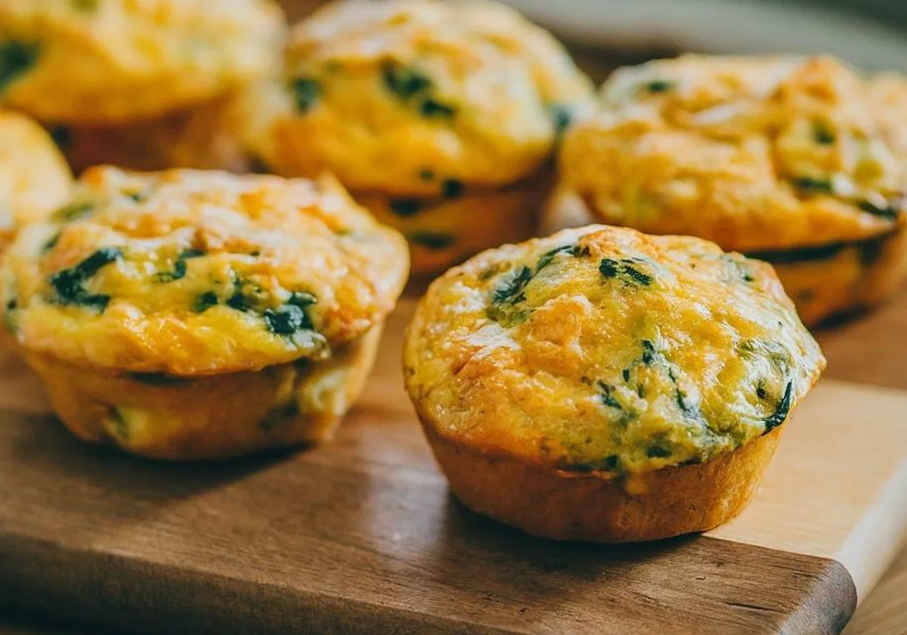

Muffin de vegetales

Ingredientes:
- 1 zanahoria
- 1 papa
- Brocoli
- 2 huevos
Preparación:
- Rallar la zanahoria
- Rallar la papa (quitar todo el líquido)
- Cocinar un poco hasta que se ablanden
- Cocinar el brócoli
- Mezclar todo y condimentar
- Poner en moldes y mandar al horno precalentado a 200°C por 15
Return